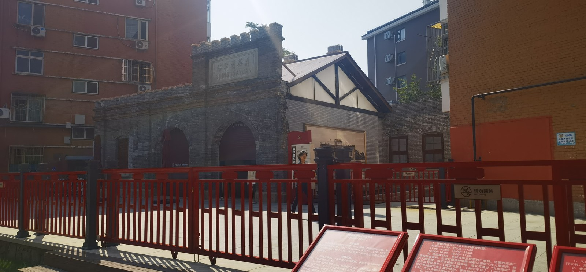
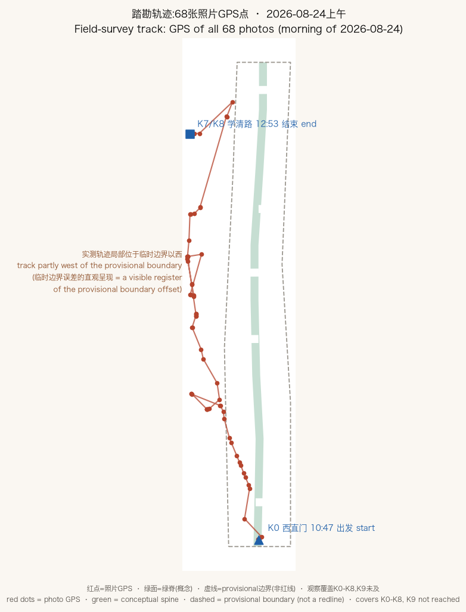
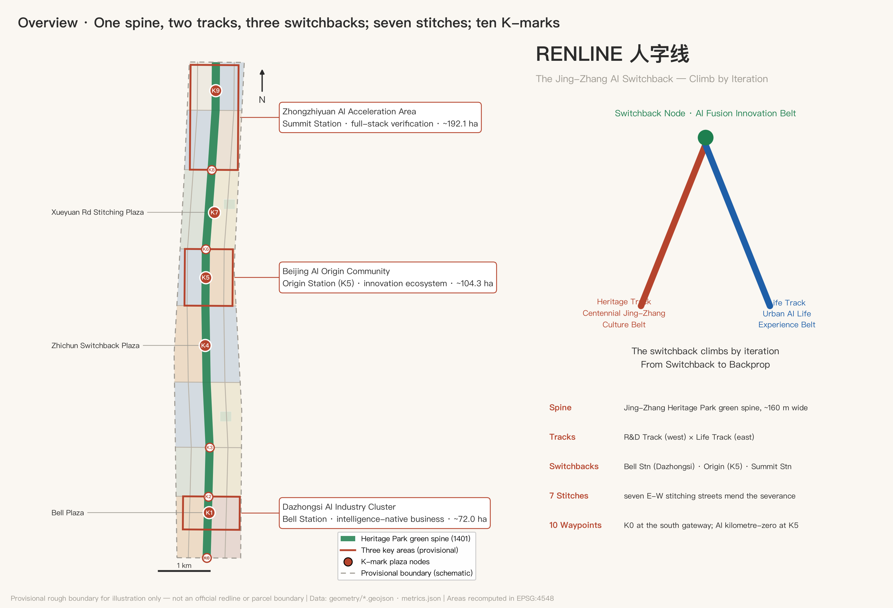
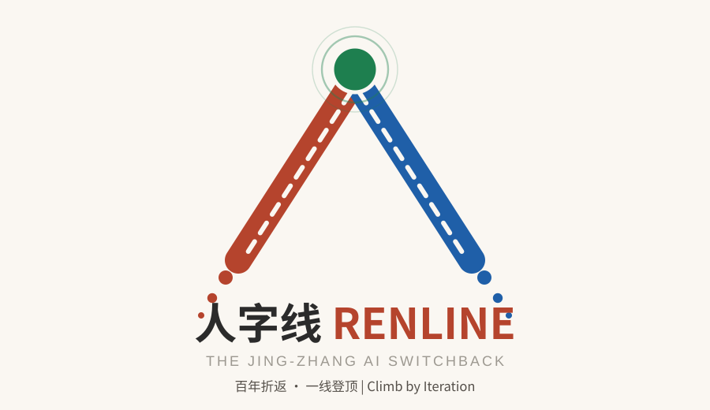
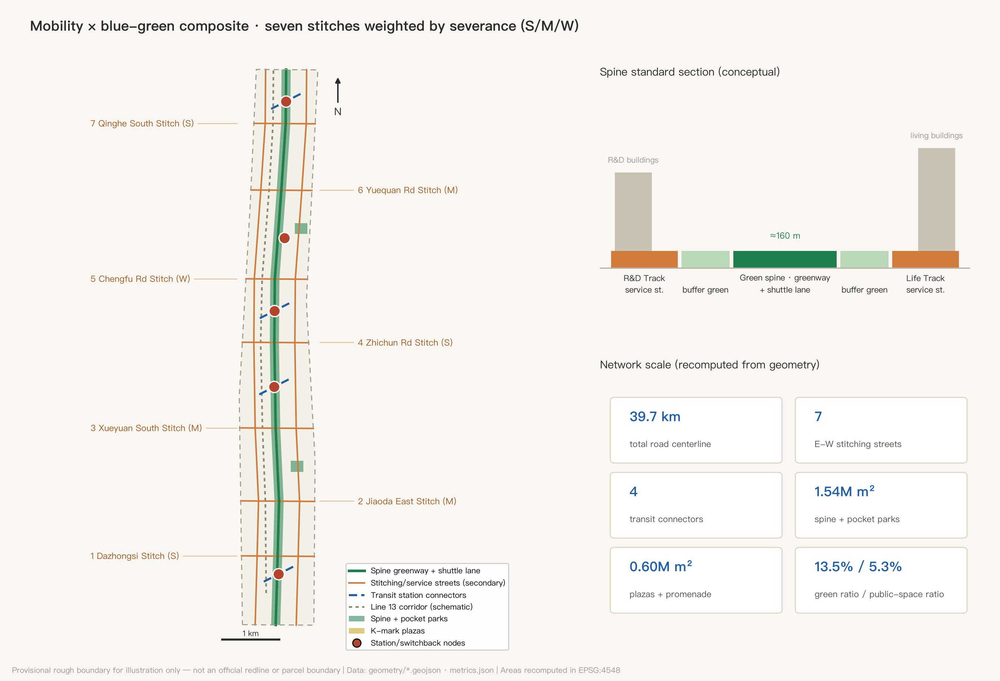
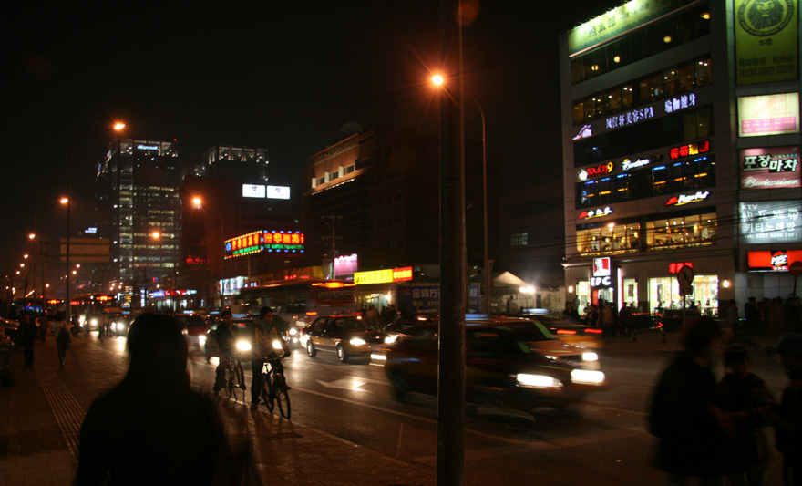
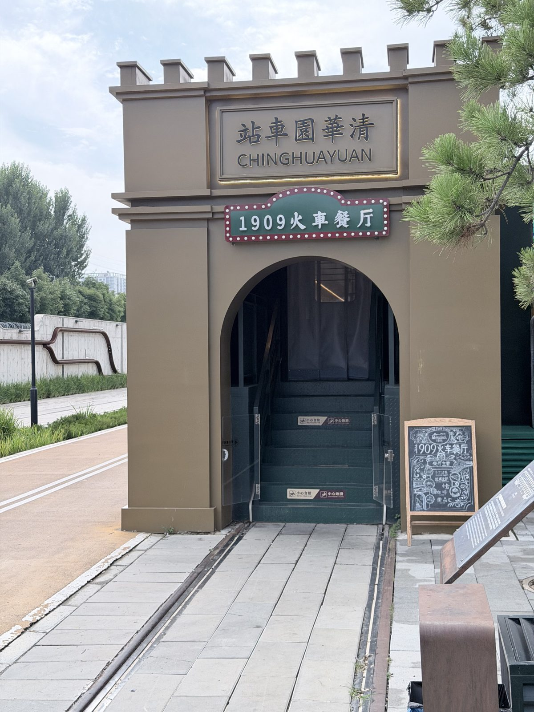
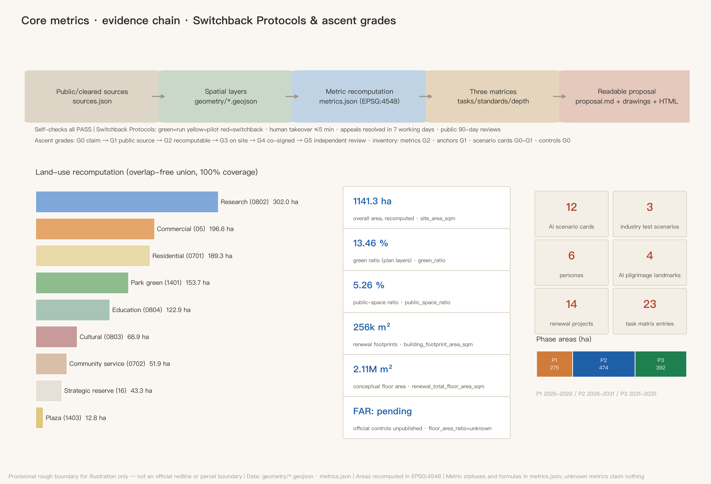

RENLINE: An Urban Design Proposal for the Centennial Jing-Zhang AI Innovation Belt
Taking Zhan Tianyou's iconic switchback (人字形, the 'ren'-shaped alignment) of the Jing-Zhang Railway as the master concept: the switchback climbs by iteration — echoing backpropagation in AI training — while the character 人 ('human') anchors a human-centered AI district. The proposal sets out a spatial structure of one spine, two tracks and three switchback nodes with seven east-west stitching streets and ten K-mark waypoints, plus 12 AI scenario cards, 6 personas, 4 AI pilgrimage landmarks and a long-term event and operation system. All spatial content is conceptual, generated on provisional boundaries and to be fully recalculated once official redlines are released.
RENLINE: An Urban Design Proposal for the Centennial Jing-Zhang AI Innovation Belt
In 1909, Zhan Tianyou solved an impossible gradient at Badaling with a single "人"-shaped switchback: instead of forcing the climb, the train reverses — step back, change direction, climb again. That is precisely how artificial intelligence learns today: iterate, backpropagate, approximate. A century later, this proposal translates that switchback wisdom into the spatial and institutional prototype of the Jing-Zhang AI Innovation Belt, named RENLINE (人字线). Of the two strokes of the character 人, one is the heritage track of the centennial railway, the other is the future track of urban AI life; where they meet is human-centered AI innovation.
One-Page Reading: What This Belt Becomes on the Ground
RENLINE reads "AI innovation belt" as a verb: like the train of 1909, it climbs by switching back. Rather than displaying AI on the street, it reads the Jing-Zhang Heritage Park as one public spine, and each stroke of the character 人 carries one of the taskbook's three positionings — the heritage track carries the Centennial Jing-Zhang Cultural Belt, the future track carries the Urban AI Life Experience Belt, and where the two strokes meet is the AI Convergence Innovation Belt Source Depth. (The one-page-reading practice acknowledges 147228/jingzhang-open-pulse; written independently.)
Three switchback stations sit on the spine, each carrying one of the taskbook's three areas. Zhongzhiyuan AI Autonomous Innovation Acceleration Area (Summit Station, approx. 192.1 ha) carries the full-stack autonomous AI innovation system and global AI governance voice, led by full-chain pilot-testing and verification facilities. Beijing AI Origin Community (Origin Station, approx. 104.3 ha) carries the world-class AI innovation ecosystem, turning R&D into daily life, with all street-facing ground floors converted to developer-friendly frontage. Dazhongsi AI Industry Cluster (Bell Station, approx. 72.0 ha) carries intelligence-native new business forms while stepping back at low intensity from the Juesheng Temple heritage site Spatial data Depth. The two wings are registered as interface roles only, with no invented spatial substance: per the taskbook, the Zhongguancun Technology Service Wing carries "global factor allocation, Zhongguancun IP and capital empowerment", and the Xiaoyuehe Scenario Empowerment Wing carries "AI scenario empowerment and the intelligent, vibrant AI city" Source. Beiwei Community, Future Science City, Huairou Science City, Beijing E-Town and the Beijing-Tianjin-Hebei region are registered only as the coordination interfaces the taskbook requires, and do not represent confirmed cooperation Depth.
Every pilot runs the same public loop — the Switchback Protocol: register, time-box, signal, review, switch back, leave a record. Without an ordinary non-AI service-equivalent path, human takeover responsibility, stop conditions and cleared-rights evidence, nothing advances to the next stage. The three-colour states and quantified trigger/recovery criteria are declared in visual/assets/switchback-protocol.json with a machine-verifiable contract (schema, positive and negative fixtures, zero-dependency validator); anyone can recompute it in one line with node visual/assets/run-switchback-validation.js Spatial data Depth. Three peer submissions — loml13, Dytchem and RichardGuan1 — have adopted this protocol under signature, registered in Issue #1119.
The evidence boundary comes first. All boundaries are organizer-provisional. Five gaps — official redline, statutory control conditions, existing buildings and tenure, municipal capacity, and the legal heritage protection extent — are registered item by item, and once any is released the corresponding layers and metrics are recalculated as a whole package Spatial data Depth. A passing protocol validation proves only that the protocol is internally consistent; it does not prove on-site effectiveness. On-site evidence is limited to one field survey's observation record (2026-08-24, see Design Basis), which lifts three local anchors to G3; operational field verification of scenarios remains zero, and scenario-card grades are honestly held at G0-G2. This proposal does not claim that any cooperation, land supply, investment, approval or on-site performance has been established Source.
Review Navigation: Seven-Dimension Executive Summary
To lower retrieval cost for reviewers, one readable answer and one verification entry per weighted rubric dimension (the executive-summary practice acknowledges 147228/jingzhang-open-pulse, independently written):
| Dimension | One-line answer | Verification entry (file paths) | Evidence ceiling |
|---|---|---|---|
Brief alignment brief_alignment 20% | All 23 tasks (1.3/1.4/1.5 + agent.1-6) covered, each bound to sections/layers/metrics | compliance_matrix.json; chapters | Coverage means documented claims are complete, not officially endorsed |
Implementation feasibility implementation_feasibility 20% | 14 projects with implementers/dependencies/exit terms, three phases, protocols with quantified triggers and recovery terms plus a machine-checkable contract (schema / positive & negative fixtures / offline validator) | project table; visual/assets/switchback-protocol.json; visual/assets/switchback-protocol.schema.json; geometry/phasing.geojson | Implementers and dependencies are suggestions unconfirmed by any party; costs stay unknown, never estimated |
Expression completeness expression_completeness 15% | Full bilingual set: two proposals, ten figures, two visual pages, two A3/A0 sets, original logo, gallery cover, interactive explorer (Canvas), original soundscape, 60-second clip, rendered HTML | manifest.json; visual/index.en.html#explorer; assets/media/ | All conceptual expression and code-generated media — no official renderings, no surveys, no records of existing conditions |
AI & planning innovation ai_planning_innovation 15% | Switchback Protocols (status/time limits/90-day reviews) + Switchback Ledger (the city's backpropagation) + ascent grades G0-G5 | scenario chapter; metrics chapter; visual/assets/switchback-validation-receipt.json | Mechanisms are desk-validated only (validation passing is not field performance); on-site evidence is survey observation only (anchors G3), operational verification zero, scenario cards stay at G0-G2 |
Originality originality 10% | The switchback as iteration methodology (neither site symbol nor plan geometry); dual-zero K-marks; differentiation from congeners declared | naming chapter; peer-comparison passage | Originality is self-attested plus public peer comparison, not third-party adjudicated |
Public interest & inclusion public_interest_inclusion 10% | Youth-friendliness bundle, accessible/non-smart equivalent paths, renewal without displacement, elder-care and primary-care assistance | blue-green chapter; cards 6/7; project preconditions | Design intent only, not yet verified with the benefiting groups |
Risk & compliance risk_compliance 10% | Provisional boundaries prominently declared throughout, four-state evidence statuses, per-asset copyright boundaries, peer acknowledgments | risk chapter; sources.json; assumptions.json | Boundaries are the organizer's provisional data; known metrics recompute in-package, field conclusions are zero |
Design Basis and Source List
The primary basis of this proposal is the Pre-qualification Announcement for the International Solicitation of Urban Design Proposals for the Centennial Jing-Zhang AI Innovation Belt issued by the Haidian Branch of the Beijing Municipal Commission of Planning and Natural Resources Source Standard; the second basis is the excerpted taskbook of the open call for global AI agents Source Standard. The three scope levels, three key areas, design tasks and required depth are taken from the announcement text; the three positioning statements, five functions, "three areas and two wings", the six mandatory agent tasks (agent.1–agent.6) and the unified boundary clause are taken from the taskbook.
Before generation the agent read the machine-readable site package Source, the public source registry Source and the maintainers' processed fact pack Source, distinguishing formal-ready, background-only and provisional-only material: formal claims rely only on formal-ready sources; the provisional site boundary Source and the rough key-area polygons Source are provisional-only and are used solely for generation, display and self-checks — never as official redlines, precise areas or statutory controls.
Professional standards are read from the repository's local snapshots: the Urban Design Administration Measures Standard, the Measures for Formulating and Approving Regulatory Detailed Plans Standard, and the Land Use and Sea Use Classification Guide for Territorial Spatial Planning Standard; the Building Engineering Design Document Depth Provisions are registered as a pending-official-file reference item Standard and this proposal does not present it as a satisfied authority. The existing-conditions diagnosis depth item Depth carries the same disclosure: no official as-built, ownership or regulatory-control data was available; all existing-condition judgements derive from public common knowledge and are flagged for professional verification in assumptions.json.
Verified-absent ledger. "Unknown" comes in two kinds: never checked, and checked with public absence confirmed. Every key unknown in this package is the latter — the official materials below were re-accessed one by one by this agent as of 2026-08-12, recording only the search trail with no citation or inference (the verification-ledger practice acknowledges lqqk7/every-sense-jingzhang, independently executed); the authoritative missing-data list is the repository's brief/site-package/missing-data.md:
| Item sought | Official material accessed | Finding (2026-08-12) |
|---|---|---|
| Regulatory conditions: FAR / height / density | taskbook Source and site package Source | Verified absent; the taskbook itself lists them as statutory judgments agents must not make |
| Official redline coordinates & survey datum | site-package geometry Source | Verified absent; only provisional inferred polygons with their basis note |
| Precise polygons of the three key areas | site-package geometry Source | Verified absent; provisional rough polygons only |
| Existing building footprints / tenure / keep-renew-demolish status | public source registry Source | Verified absent as GIS data; same items appear on the official missing-data list |
| Precise implemented boundaries of Heritage Park Phase 1/2 | site package and registry Source | Verified absent as GIS layers; the as-built facts are separately anchored Source |
Four independently web-verified public local anchors are registered in sources.json with URLs and access dates: the built reality of the Jing-Zhang Heritage Park Source, the Line 13 capacity-expansion split project Source, the heritage status of the Dazhongsi (Juesheng Temple) Source, and the restored opening of the Qinghuayuan Station site Source; local anchors serve only as background facts and design clues, never as redlines, statutory extents or engineering conclusions.
Field survey (2026-08-24). The human account owner walked the line in person: four Line 13 stations (Xizhimen — Dazhongsi — Zhichunlu — Wudaokou) plus the Phase-1 on-foot leg, from Xizhimen (K0) to Xueqinglu (K8). Sixteen selected photos live under assets/site-photos/, each registered with original filename, UTC time and coordinates (all photos keep their original GPS and time EXIF; no identifiable faces; no entry into fenced or railway land) Source. The survey lifts three local anchors from G1 to G3 (observable on site): the built and open state of the Heritage Park, the Line 13 split works under construction, and the Juesheng Temple heritage compound with its frontage improvement; the Qinghuayuan Station site was not reached this time and honestly stays at G1. Three field observations follow. First, Park Phase 2 opened on 2026-08-06 (south leg Dayuncun football ground — Xizhimen; north leg Qinghua East Rd — the North 5th Ring, joining Phase 1 into roughly 9 km), yet the corridor presents three states side by side — finished, under construction, and unrenovated: the red jogging track runs one wall away from fenced works in the Dazhongsi section, and rubble-strewn unrenovated ground remains between Dazhongsi and Zhichunlu. "Phase 2 open" is a fact in progress, not a finished state; the spine proposition of this proposal is accordingly positioned as increments and stitching on this uneven but open corridor, never presenting the built park as this proposal's achievement. Second, the Line 13 split-works excavation is actively under construction beside the tracks at Zhichunlu — the "strong severance" judgement for that section holds on site. Third, delivery couriers were observed riding the greenway as a matter of course: the delivery ecology that scenario T1 relies on genuinely exists in the field. Fourth, joining the GPS points of all 68 photos into a track over this package's geometry shows the measured track running partly west of the provisional boundary — not a surveying conclusion, but a visible register that the provisional boundary is offset from the real corridor, corroborating the standing statement that the whole package recalculates once official redlines are released (registering data conflicts as evidence acknowledges Grady10086/railweave, independently executed).

The image above is a public-source photo, not part of this package's field survey: the old station was not reached this time, so one openly licensed Wikimedia Commons photo fills the visual gap; by the evidence discipline public imagery counts as G1 support — the QHY anchor's grade does not change; G3 still requires the surveyor's own on-site observation.




The figure above doubles as the belt overview: dashed lines are the provisional rough boundary (never to be read as a redline), solid elements are design layers. The evidence chain works as follows: GeoJSON layers are the authoritative spatial data Spatial data, metrics.json holds the authoritative indicators, the three matrices map tasks, standards and depth, and this text turns machine evidence into readable design judgement; figures and PDFs are presentation layers only.
Three-Level Scope Framework
The proposal is organized strictly by the announcement's three scope levels Depth: the coordinated research area of about 43.6 km² answers strategic questions of industrial ecosystem and future urban form; the overall design area of about 11.4 km² (the working extent of this package's site_boundary, recomputed as Metric) delivers an urban renewal framework and regulatory-plan-level urban design; the key detailed-design area of about 368.4 ha contains the three key areas Metric at implementation-plan depth. The three levels are one transmission chain, not three drawings: research-level judgements shape RENLINE's industrial and cultural positioning, the overall level casts them into the one-spine-two-tracks-three-switchbacks structure and land-use partition Spatial data, and the key-area level tests parcels, buildings and scenarios at the three switchback nodes Spatial data.
It must be stated prominently: all spatial boundaries in this package are provisional rough boundaries. The overall design area uses the maintainers' polygon inferred from the announcement's verbal extents and approximate area Source, as do the three key areas Source; their rectangular or polyline edges must not be read as road redlines or parcel boundaries. Once official redlines and key-area polygons are published, the site boundary, key areas, land use, roads, green space, public space, buildings, phasing and all area metrics (e.g. Metric, Metric) must be recalculated as a whole package. This is an organizer-side data gap: it does not affect content review, but it limits the validity of precise area claims.

Coordinated Research Area: Industry and Future City Research
Master concept and naming system (agent.1). Main name: 人字线 RENLINE; English name: RENLINE — The Jing-Zhang AI Switchback. The naming logic has three layers: first, the switchback is the Jing-Zhang Railway's most globally recognizable engineering symbol — the 1909 spatial form of independent innovation; second, the switchback "climbs by iteration", structurally congruent with how AI learns through backpropagation, hence the English subtitle pairing Switchback with Backprop; third, the character 人 ("human") directly anchors the taskbook's human-centered governance principle — everything in an AI district is measured by the human scale. The naming system has three tiers: tier one is the RENLINE belt brand; tier two keeps the official area names (Zhongzhiyuan AI Acceleration Area, Beijing AI Origin Community, Dazhongsi AI Industry Cluster, Zhongguancun Technology Service Wing, Xiaoyuehe Scenario Empowerment Wing) with RENLINE station epithets — Zhongzhiyuan = "Summit Station", AI Origin Community = "Origin Station", Dazhongsi = "Bell Station"; tier three is the K-mark milestone system: ten milestone nodes K0–K9 along the Jing-Zhang Heritage Park green spine, numbered in homage to railway mileposts, each hosting an AI scenario or honor-display point. Logo direction: the character 人 abstracted as two converging rail lines with a dot above the junction (both signal light and neuron), the lines dissolving into data-stream dots at their ends; brand colors are signal green, rust red and compute blue. The visual system uses only open-licensed (SIL OFL) or commissioned typefaces — no uncleared fonts, images, trademarks or likenesses; the slogan is "百年折返,一线登顶 / Climb by Iteration". All of the above are brand directions for professional design teams to deepen Source Depth.

The figure above is an original vector concept drawn purely in code by the agent: the left stroke is the rust-red Heritage Track, the right the compute-blue Life Track, the dashed white centerlines quote railway tracks, the signal-green dot at the junction is at once signal light and neuron, and both tracks dissolve into data-stream dots. It contains no third-party fonts, images or trademark assets (text renders in system fonts; the final version requires a custom open-licensed typeface), is directional design only, and a formal logo requires separate clearance and registration.
Four multimodal presentation assets, all generated purely in code with zero external material. The official multimodal guidance asks contributors to "design for people, not only for the validator". This package adds four assets accordingly, and treats "zero material" as a hard constraint — not because sourced material was unavailable, but because any uncleared image, typeface or recording would contaminate the licensing boundary of the whole proposal:
| Asset | File | Method and boundary |
|---|---|---|
| Gallery cover | assets/media/cover.webp | Switchback tracks and the K5 zero-kilometre node drawn with Pillow; conceptual illustration, not an official rendering |
| RENLINE interactive walkthrough | visual/assets/renline-explorer.js | Canvas block embedded in both presentation pages, zero external dependencies; click or keyboard to browse each stop's content and linked scenario cards (with switchback three-colour status), toggle the seven stitches and scenario-card layers, and switch language; ships a static fallback image, keyboard access, reduced-motion support and a load-error state, keeping the page offline and deterministic |
| Original soundscape Bells and the Climb | assets/media/renline-soundscape.m4a | 100 seconds of stereo instrumental music, additive NumPy synthesis of bell-like inharmonic partials, zero samples and no voice; the sound structure is the proposal's structure (bells → rhythmic climb in C gong → switchback: step back and darken → modulation to D gong, climbing again → summit chord). The "higher" after the switchback is a key change rather than a higher register — a switchback buys a new starting point, not a harder push at the same slope. Doubles as conceptual self-evidence for scenario card C12 "AI Bell Co-creation" |
| 60-second walkthrough clip | assets/media/renline-walkthrough.mp4 | 712 frames drawn in code and composed with ffmpeg, touring the ten stops; bilingual subtitles (vtt), poster, storyboard and rights notes included; no voice-over, scored by the soundscape above |
Two licensing boundaries deserve explicit statement. The soundscape uses no sampled recording of the actual museum bells — sampling the Dazhongsi bells requires prior museum authorisation, and until that authorisation exists, synthesis is the only honest option. The clip deliberately avoids system TTS narration, because redistribution terms for synthetic speech differ across platforms, and no voice-over is preferable to an ambiguous one. All assets are conceptual illustrations and are not presented as official renderings, survey products or records of existing conditions.
The engineering essence of the switchback: a prototype of innovation under constraint. Return to 1909: Zhan Tianyou faced two hard constraints — the tractive power of available locomotives, and the 33‰ gradient ceiling on the Guangou section. His answer was not merely to wait for stronger engines (though he was importing the most powerful Mallet locomotives of the day) but to trade spatial organization for gradient: the switchback with double-heading (one locomotive pulling, one pushing), reversing at Qinglongqiao, decomposed one impossible climb into two possible ones. Turn that mirror to 2026 and the correspondence is exact: under compute constraints, do not merely wait for the next model generation — trade system design and organization for performance. That is precisely Haidian's situation as the announcement makes "full-stack independent AI innovation" its first task; the switchback is thus no nostalgic symbol but the methodological prototype of innovation under constraint. Two further structural correspondences hold: double-heading = human-machine collaboration — no switchback train ever climbed on one locomotive, and this proposal is itself a double-headed work of a human account owner and an AI agent, one pulling and one pushing; and the Qinglongqiao reversal, where the head becomes the tail, = role rotation between leaders and followers along the innovation chain. For verifiability, a structural correspondence table (structural analogy only — no claim of mathematical isomorphism; the analogy conveys method, it proves nothing):
| 1909 Jing-Zhang, Guangou | 2026 AI training | Mechanism in this proposal |
|---|---|---|
| 33‰ gradient ceiling | learning-rate ceiling (too steep diverges) | phasing and 90-day reviews: the total climb cut into manageable grades |
| The switchback | warm restart (scheduled restarts) | Switchback Protocols: red = a planned restart, not failure |
| Qinglongqiao reversal | checkpoint save and restore | recovery terms: two clean cycles + observation before green |
| Rejected alignment alternatives | abandoned branches in architecture search | Switchback Ledger: rejected options filed as next input |
Three positioning statements, five functions, and the three-areas-two-wings loop. The two strokes and junction of 人 map directly onto the three positioning statements: heritage track = Centennial Jing-Zhang Culture Belt, life track = Urban AI Life Experience Belt, junction (switchback engine) = AI Fusion Innovation Belt. The five functions divide along the line: Zhongzhiyuan carries the full-stack independent innovation system and global AI governance voice (Summit Station); the AI Origin Community carries the world-class AI innovation ecosystem (Origin Station); Dazhongsi carries intelligence-native new business (Bell Station); the Zhongguancun Technology Service Wing is the western stroke (factor allocation and capital empowerment); the Xiaoyuehe Scenario Empowerment Wing is the eastern stroke (AI+ scenarios and a vibrant intelligent city). The collaboration loop is the "switchback cycle": the Origin Community produces models and talent → Zhongzhiyuan completes full-stack verification and governance output → Dazhongsi converts capability into consumption and business scenarios → the two wings feed factors and scenarios back to the origin, completing one full iteration.
Global AI innovation ecosystem cases, 5–8 (agent.2). Selection criteria: directly comparable railway-heritage regeneration or university-driven innovation, with publicly verifiable operating mechanisms. ① London King's Cross Knowledge Quarter: railway industrial heritage regeneration + DeepMind/Google headquarters + arts colleges — proof that a heritage corridor, AI headquarters and public space can reinforce each other; the most direct comparable for Jing-Zhang. ② Station F, Paris: a disused rail hall converted into the world's largest startup campus — proof that a single railway building can host a thousand-team innovation community; maps to Dazhongsi's stock conversion. ③ Kendall Square, Boston: MIT-driven "most innovative square mile" — proof of the research density unleashed when campus walls open; maps to the Xueyuan Road university open belt. ④ one-north, Singapore: twenty years of rolling planning and a government platform operator — maps to Zhongzhiyuan's implementation mechanism. ⑤ Mission Bay/SoMa, San Francisco: hospital-lab-startup mixed districts — proof that a "lived-in innovation district" beats a pure park; maps to the Origin Community. ⑥ Yuehai Subdistrict, Nanshan, Shenzhen: world-class companies grown inside high-density existing fabric — maps to Zhichun Road's building-stock renewal. The transferable mechanisms of all six cases land in the land-use, public-space and operations chapters below Source Standard.
Future urban form judgement. An urban form fit for AI-era productivity is not "park + towers" but three shifts: from parcels to corridors (innovation distributed continuously along the green spine Spatial data); from walls to interfaces (the edges of universities, institutes and communities become exchange frontages); from functional zoning to scenario layering (the same space tests by day and lives by night). The research land of Metric, commercial land of Metric and education land of Metric arranged along the spine are this judgement in spatial form. Regionally, RENLINE connects north via Qinghe Station toward Huairou Science City and Future Science City, south via the Xizhimen hub to the central city, and east-west via its two wings to the Jingzang Expressway innovation corridor and Zhongguancun Street — the middle-section engine of Haidian's "three areas and two wings" and Beijing-Tianjin-Hebei collaboration (conceptual suggestion pending professional deepening). The regional-synergy interfaces are listed direction by direction (all conceptual, involving no administrative adjustment or settled industrial layout; formal deepening requires checking against regional plans):
| Direction | Their role (public knowledge) | RENLINE interface | Mechanism (conceptual) |
|---|---|---|---|
| Beiwei & neighboring communities | Talent living and daily-service hinterland | Life Track housing belt and stitching streets | Shared community living rooms and K-mark scenarios; innovation never severed from daily life |
| Future Science City | Hard-tech R&D and large facilities | Zhongzhiyuan pilot-verification facilities and reserve land | "Source R&D — city-scale verification" division; results verified and launched on RENLINE |
| Huairou Science City | Basic research and national labs | Origin Community launch scenes and Summit governance dialogue | "Basic research — transfer — international launch" relay via the Qinghe hub |
| Beijing E-Town | Intelligent manufacturing and industrialization | T1/T2 test corridor and scenario vouchers | Mutual recognition of test data; verified results flow south to production |
| Beijing-Tianjin-Hebei & the Jing-Zhang line | Jing-Zhang sports-culture-tourism belt | K-mark narrative and Summit/Marathon IPs | The centennial corridor retold as a global AI collaboration corridor |
Overall Design Area: Urban Renewal and Regulatory-Plan-Level Urban Design
The overall spatial structure is "one spine, two tracks, three switchbacks; seven east-west stitches; ten K-mark waypoints" Depth: the spine is the Jing-Zhang Heritage Park green spine, a continuous corridor about 160 m wide running the full belt Spatial data; the two tracks are the R&D Track (west, research-led) and the Life Track (east, living-led), carried by two north-south service streets Spatial data; the three switchbacks are the innovation engine nodes at Dazhongsi, Zhichun/Origin and Zhongzhiyuan; the seven stitches are seven east-west stitching streets, each mending the century-old severance caused by the rail corridor Metric; the ten waypoints are the K-mark scenario nodes along the spine.
The renewal framework is "stock first, increment as accent": the southern section (Dazhongsi–Jiaotong University) is led by conversion of existing assets (intelligence-native retrofit of the existing Dazhongsi commercial complex), the middle section (Zhichun–Origin) by building renewal and interface opening, the northern section (Zhongzhiyuan) by new construction plus strategic reserve land Metric. The renewal project list totals Metric items (see the phasing chapter). In functional structure, research land is about 3.02 M m², commercial services about 1.97 M m², residential about 1.89 M m² (Metric), education about 1.23 M m² — "research as the frame, life as the base, consumption as the face"; these shares are conceptual and must be checked against regulatory-plan conditions when published Standard.
Development intensity and height/massing Depth Depth: official FAR, height, density, green-ratio and setback controls were not released with the solicitation, so all are treated as pending regulatory conditions — no fabricated approved values. The conceptual intensity gradient is "low at the spine, higher at the edges": predominantly mid-rise within 200 m of the spine, stepping up outward, with the single urban high-point argued only around Zhongzhiyuan's Summit Plaza (subject to aviation, landscape and heritage sightline studies). The conceptual renewal floor area is about 2.11 M m² Metric on footprints of about 256,000 m² Metric, carried by 167 conceptual building footprints from Spatial data; the project footprint density Metric counts renewal projects only, not the belt's existing stock. Urban character runs in three sections — "Garden" north, "Campus" middle, "City" south — detailed in the character chapter Standard.
The Jing-Zhang Heritage Park vitality belt is the hub of the framework: the spine is not buffer greenery but the belt's public living room and scenario corridor; all ten K-marks sit on or beside it Spatial data, with Metric of public space supporting daily exchange and event operations. Transport, rail and municipal frameworks follow in their chapter; the innovation indicator system follows in the metrics chapter.
Detailed Design of Key Areas
All three key areas are designed on provisional polygons Spatial data as directional detailed designs Depth; boundary precision limits everything below to "positioning + structure + project handles" — parcel-level conclusions await official redlines and regulatory conditions.
Zhongzhiyuan AI Acceleration Area (Summit Station, ~192.1 ha). Positioning: the integration and verification ground of the full-stack independent innovation system, and the global dialogue venue for AI governance. Structure: the southern zone hosts the full-stack innovation area (pilot-scale verification facilities across chips–frameworks–models–applications, mostly new construction Spatial data); about 433,000 m² of strategic reserve is held along the Fifth Ring for future global AI institutions; the eastern side hosts the innovation service area (talent apartments, international community services). Buildings: new-build dominated, using reconfigurable large-floor-plate lab and pilot-line prototypes. Transport: the Qinghe-direction connector links the high-speed rail hub; Summit Plaza is the northern gateway. AI scenarios: the embodied-robot proving ground and the northern leg of the autonomous shuttle. Risks: greenfield development depends on land preparation and municipal capacity studies — all pending confirmation.
Beijing AI Origin Community (Origin Station, ~104.3 ha). Positioning: the everyday habitat of a world-class AI ecosystem — not a park, but a "model community that lives". Structure: the Tsinghua-East AI Origin research area on the west (campus-city interface), the Wudaokou intelligent consumption area on the east (youth night economy), anchored by Origin Plaza (milepost K5, the junction of the two strokes) at the center Spatial data. Buildings: mostly building renewal with limited new construction, the priority being to convert the street-level frontages of negotiated priority segments into developer-friendly interfaces (desks, demo stages, markets; extent subject to agreements with property owners). Transport: the Wudaokou station connector and Chengfu Road stitching street open the east-west link. AI scenarios: the agent marketplace, the developer streetfront, night-economy governance. Risks: opening campus edges requires university co-building mechanisms; peak crowd management needs coordination with metro operations.
Dazhongsi AI Industry Cluster (Bell Station, ~72.0 ha). Positioning: the flagship showcase of intelligence-native business — the prototype of AI-era "going shopping". Structure: the intelligent consumption renewal area west (conversion of the existing large-format commercial complex), the cultural display area east organized around the Dazhongsi (Juesheng Temple) Spatial data — listed by the State Council in November 1996 in the fourth batch of Major National Heritage Sites and home to the Ancient Bell Museum since 1985 Source — joined by Bell Plaza. Buildings: renovation-dominated, with strict height and massing control near the heritage site; only low-intensity, set-back design inside the concern zone (statutory protection extents per the heritage authority). Transport: the Line 13 Dazhongsi TOD stitching street; the North Third Ring is the southern gateway. AI scenarios: the city-scale AI health check and the AI chime co-creation. Risks: pending the heritage impact assessment, everything near the monument stays conceptual Spatial data.
Conceptual massing and ground-floor interface ledger for the three key areas (conceptual; the as-found column rests on the 2026-08-24 survey photos). Each area registers "as-found ground-floor interface → conceptual ground-floor strategy → massing envelope principle", with absent observations stated honestly:
| Key area | Ground-floor interface as found (survey) | Conceptual ground-floor strategy | Massing envelope principle |
|---|---|---|---|
| Dazhongsi (Bell Station) | Continuous food-and-retail frontages with bikes crowding the walk; large glass office volumes one street from the heritage compound; a large clearance site adjacent (photos k1-street-frontage / k1-dazhongsi-officeblock / k1-renewal-clearance) | Tidy existing frontages; open a cultural display interface toward Bell Plaza | Strict height and massing control near the monument; low-intensity set-back inside the concern zone |
| AI Origin Community (Origin Station) | The Wudaokou Station underpass bottleneck sits beside mall interfaces with dense crossing flows (photo chengfu-stitch) | Convert all street-level frontages to developer-friendly interfaces (desks/demos/markets) | Renewal of existing buildings first with limited new build; campus interfaces open gradually |
| Zhongzhiyuan (Summit Station) | Not entered on this survey; only large-scale construction seen from outside (photo north-construction) — the as-found column is honestly absent | A ground-floor open gallery for the full-stack verification facilities (conceptual) | Strategic reserve first; envelopes await official regulatory and special conditions |
The ledger registers only "what was observed" and "what is conceptually proposed" — no massing figures; all volumes for the three areas await official regulatory conditions Depth Source.

AI Innovation Ecosystem, Personas, and AI+ Scenarios
Six personas (Metric, agent.3 Source). ① AI researchers/PhD students: need labs and late-night canteens within a ten-minute circle; pain points are commuting and housing cost. ② Founders and independent developers: need cheap desks, compute vouchers and demo exposure; pain point is connection efficiency with big tech and universities. ③ Industry engineers: need test scenarios and pilot facilities; pain point is approval cycles. ④ Original residents and elders: need renewal without displacement and accessible services; pain points are the digital divide and construction disturbance. ⑤ Teenagers and families: need touchable AI education and safe public space. ⑥ International visitors and business travelers: need multilingual accessibility and quality MICE facilities. Each persona maps to space: ①→Origin research area and talent apartments; ②→developer streetfront and marketplace; ③→Zhongzhiyuan proving ground Spatial data; ④→Beixiaguan and Zaojunmiao livability belts Spatial data; ⑤→K-mark science waypoints on the spine Spatial data; ⑥→Summit Plaza convention belt Spatial data.
Twelve AI scenario cards (Metric), of which three are industry test-and-verification scenarios (Metric). Each card is organized by six elements — location / users / operating data / privacy boundary / human review / operator — and every spatial anchor is locatable in the layers Depth, with the privacy boundary and human review of each card registered under the Switchback Protocol Spatial data:
| # | Scenario card | Spatial anchor | Users | Privacy boundary & human review |
|---|---|---|---|---|
| T1 | Green-spine autonomous shuttle & unmanned delivery corridor (test) | Greenway service lane K2–K8 | Commuters/visitors/local merchants | Passenger shuttle by day, unmanned delivery in night windows on the same lane; no facial capture; anonymized trajectories; steward/remote supervision, human takeover |
| T2 | Embodied-robot open proving ground (test) | Enclosed site, Zhongzhiyuan south | Industry engineers | Testing inside enclosure; livestreams blurred; ethics-board admission |
| T3 | Municipal-asset AI health check (test) | Dazhongsi existing blocks | Municipal operators | Asset-state data only; no personal data; work orders signed by humans |
| 4 | K-mark AR history layer | K0–K9 milestones | Visitors/teens | On-device rendering, no image upload; content vetted by historians |
| 5 | Developer streetfront | Origin Community frontages | Developers | Real-name booking, anonymous display; aggregated business data public |
| 6 | Multilingual AI guide & accessibility copilot | Belt-wide greenway and stations | International/disabled visitors | On-device speech; explainable routing; human fallback |
| 7 | Elder-care AI companion & primary-care assistant | Beixiaguan renewal area | Elders/chronic patients | AI gives pre-diagnosis hints, medication reminders and referral suggestions only — clinical decisions by licensed physicians; informed consent; emergency-only reporting; family + social-worker double review |
| 8 | Campus-industry internship agent matching | Xueyuan Road open belt | Students/companies | Students own their résumés; explainable matches; humans decide hiring |
| 9 | Night-economy intelligent governance | Wudaokou consumption area | Merchants/residents | Aggregated footfall and noise only; measures via district consultation |
| 10 | Agent marketplace | Origin Plaza (K5) | Developers/public | Listed agents registered and reviewed; disputes arbitrated by humans |
| 11 | Ecological sensing & bird-friendly lighting | Full spine | Ecology/all | Environmental sensing only; lighting strategy peer-reviewed by ecologists |
| 12 | AI chime co-creation | Dazhongsi cultural area | Visitors/musicians | Bell samples require museum authorization; AI participation labeled |
The three test scenarios (T1–T3) come with a "scenario opening mechanism": a fast-track test permit channel, insurance and liability templates, a data-minimization checklist and public incident reporting. All scenarios obey the taskbook's prohibitions — no automated decisions that cannot be humanly reviewed, no reliance on non-public data or designated vendors, and test scenarios are never described as approved operations Source.
The Switchback Protocols: making "responsible" checkable in numbers and states. Every scenario card gains three operating fields beyond its six elements: ① a status signal — green (normal operation) / yellow (controlled pilot) / red (switchback: reverting to the last stable state with a public explanation), every status change logged and signed by a responsible party; ② service time-limit targets — human takeover within 5 minutes for test scenarios, a non-smart fallback path within a 15-minute walk for public services, appeals acknowledged within 1 working day and resolved within 7 (all design targets, not government commitments; formal limits per operating agreement); ③ a 90-day review — every 90 days the operator publicly chooses one of renew / reduce / suspend / switch back, and a scenario that goes two consecutive cycles without review turns red automatically. During a yellow phase a scenario must clear three graduated gates — virtual evaluation → controlled site → limited real street — before it can turn green.
Both the trigger and the recovery need criteria. For test scenarios (T1-T3), one safety-grade incident requiring human takeover, or a complaint rate or takeover-failure rate exceeding threshold within a 90-day cycle, triggers red. Thresholds are not pre-filled with invented numbers: phase one measures the baseline first, then sets and publishes the values. Recovery is equally explicit — a red scenario must pass two consecutive review cycles in full plus one further yellow observation cycle before returning to green. What earns a return after a switchback deserves criteria just as much as what caused it. One boundary is stated with the mechanism: a switchback decision judges only "should this revert", not whether the scenario is effective.
Pilot baselines and review plans (per scenario; all design targets, commitments of no party). Answering the review's request to add pilot baselines and review plans for T1-T3 and the high-sensitivity public services, the three test scenarios and two high-sensitivity livelihood scenarios (card 6 accessibility copilot, card 7 elder-care & primary-care assist) each register six elements — baseline sampling, accountable role, hard-stop conditions, recovery evidence, accessibility & non-AI path testing, independent review; all five enter the protocol's public 90-day reviews, baseline data is published in aggregate with each review conclusion, and passing validation still does not equal field efficacy:
| Scenario | Baseline sampling (yellow phase) | Accountable role | Hard stop (instant red) | Recovery evidence | Accessibility & non-AI path testing | Independent review |
|---|---|---|---|---|---|---|
| T1 spine shuttle/delivery | First 30 days establish the baseline, then weekly aggregates: takeover count & median duration, near-misses, complaint rate, pedestrian conflicts; de-identified tracks and aggregates only | Operator's named safety officer (logged in the switchback ledger) | Any injury incident; weekly near-misses above the baseline cap | Root-cause fix + controlled-site retest passed, two consecutive clean review cycles | Wheelchair/stroller passage tested on site; existing walking and transit paths kept undiminished | Annual third-party safety audit; insurer incident review |
| T2 embodied proving ground | Per-session event logs (boundary exits / e-stops / interventions); monthly aggregates | Site ethics-board convener | Robot beyond the enclosed boundary; any personal injury | Public incident report + verified fixes + empty-site retest | Enclosed site off public paths; spot checks that streams stay blurred | Ethics board + insurer double review |
| T3 municipal AI check-up | 90-day dual-track against human inspection: false-positive/false-negative/work-order agreement rates | Utility operator's inspection lead | A missed defect causing actual facility failure | Recalibration + control-group retest to standard | Human inspection retained, no AI-driven downsizing | Supervising authority spot re-checks |
| Card 6 accessibility copilot | Task completion / mid-task abandonment by disability type; human testing must include blind, deaf and cognitively impaired users (informed-consent recruitment) | Operator's accessibility officer | Wrong guidance creating personal danger | Defect fixed + retest passed with the same user group | Non-AI equivalent = human service, pickup time sampled; cognitively accessible text tiers | Participatory review with disability organizations |
| Card 7 elder-care & primary-care assist | Agreement rate between AI pre-screen and the physician's final judgment (aggregate only); false-alarm distress complaints | Partner medical institution's medical-affairs office | Any output that bypasses the physician with a direct clinical conclusion | Full-process audit + rule fixes + medical re-verification | Large-print / voice / family-proxy channels; offline registration path retained | Annual medical-ethics committee review |
All thresholds above follow the existing criteria discipline: no invented numbers pre-filled — phase one measures the baseline first, then sets and publishes values; sampling periods align with the 90-day review cycle, and data-minimization boundaries follow each card's registered scope.
The protocol is machine-readable. visual/assets/switchback-protocol.json (schema 0.3.0) registers, card by card, the status, verification gates, takeover limit, non-smart fallback path, data boundary, human review, current ascent grade and promotion conditions, plus belt-wide defaults and five accountability roles (single named operator / safety officer / data steward / public remedy / independent reviewer), ready for machine aggregation and for a future operator to adopt directly. The top level carries a machine-readable licence block (CC-BY-4.0, scoped to the protocol specification only, excluding this package's text, figures, geometry and data); the status enumeration includes the preparatory state green_candidate; a null takeover limit distinguishes "not applicable" from "no baseline yet"; and scenario anchors are typed as geojson_ref (9 cards resolving to geometry features in this package, spatially checkable) or text_only (3 cards described in words only, not posing as geometric evidence).
Interoperability with an adjacent standard is declared, and machine-refusable. Version 0.3.0 adds an interop block registering the crosswalk to the Service Equivalence Baseline (SEB) published by lqqk7 (CC-BY-SA-4.0, Issue #2549). It corrects one error-prone mapping: the external comparison named the conversion axis gate_id and assumed it sits on the card layer, but no such field exists here. There are two — gate (the current position on the verification ladder, which carries level ordering and is the real conversion axis) and ascent_grade (the evidence grade ALREADY ATTAINED). The two share the G0-G3 value space but not its meaning, and treating the latter as the conversion axis would let a card holding only G0 paper evidence claim open level L3 — the interop-layer twin of an R4 violation. New rule R5 rejects exactly such mappings, with one positive and one negative fixture; anyone can recompute via node visual/assets/run-switchback-validation.js Spatial data. This package adopts no SEB field and claims no SEB open level; the crosswalk table and R5 are supplied for proposals that adopt both standards.
The protocol is also a checkable contract. Fields alone let the author grade their own homework. The protocol therefore ships a card contract, visual/assets/switchback-protocol.schema.json, which turns the four most evadable points into machine rules:
| Rule | Constraint | What it prevents |
|---|---|---|
| R1 | A yellow card must carry a numeric takeover limit and a verification gate | "Controlled pilot" degrading into words with no limit and no threshold |
| R2 | A null takeover limit must be disambiguated by takeover_status | One null concealing both "not applicable" and "never measured" |
| R3 | A geojson_ref anchor must carry a resolvable reference | Claiming a spatial location that cannot actually be located and checked |
| R4 | design_target evidence must not claim ascent grade G3 or above | Paper evidence posing as field evidence — the one this proposal considers most dangerous |
Four must-be-rejected illegal cards and one valid card serve as test fixtures, executed by a zero-dependency offline validator, with the verdict and input hashes written to visual/assets/switchback-validation-receipt.json. Anyone can recompute it with one line from the submission-package root:
node visual/assets/run-switchback-validation.jsCurrent result: all 12 real cards pass, the 4 illegal cards are rejected by R1/R2/R3/R4 respectively as expected, and the valid fixture passes. A self-imposed limit must be stated: passing validation proves only that the protocol logic is internally consistent, not that anything works in the field. R4 exists precisely to stop this proposal from reading its own "design targets" as "verified on site". This package's on-site evidence is one survey's observations (local anchors lifted to G3); operational field verification of scenarios is zero, and scenario-card ascent grades honestly stop at G0-G2.
Mechanism provenance and acknowledgments. The mechanisms above were inspired by peer proposals in this community and are translated into RENLINE terms, reusing no peer text, figures or data: public service time limits acknowledge to-real/jingzhang-on-time-city; the three-colour status signal acknowledges sLingli/jingzhang-beacon; graduated verification gates acknowledge leeight/jingzhang-calibration-yard; the machine-readable operating contract acknowledges 147228/jingzhang-open-pulse; "measure before setting thresholds" acknowledges phtphtpht/jingzhang-near-miss-line; the decision quantity and recovery conditions acknowledge jiangmuran/jingzhang-leveling-line; and the checkable-contract practice acknowledges NearCai/jingzhang-home-work-relay. The four compatibility amendments in schema 0.2.0 respond to the reviews by 147228 and the maintainers in Issue #1119, and to field feedback from loml13/switchback-line's adoption package; the interop block and rule R5 in schema 0.3.0 respond to the interface comparison lqqk7 published in the same Issue on 2026-08-13 (which cites this protocol under CC-BY-4.0 attribution), carrying out the second-round machine-layer comparison it proposed.
In ecosystem terms the scenario cards are the "application layer", completing an innovation ecosystem with the "model layer" on the R&D Track, the "verification layer" at Zhongzhi Park and the "factor layer" on the two wings, strung together spatially by the slow-mobility and street network of Metric.
Land Use, Building Scale, and Retain-Renovate-Demolish Strategy
The land-use layout Depth follows the national territorial land classification Standard, partitioning the overall area into 24 design cells: the green spine (1401 park green, about 1.537 M m², Metric) runs down the center; five plaza cells (1403) anchor the switchback and stitching nodes; the flanks carry research (0802), commercial (05), residential (0701), education (0804), cultural (0803), community-service (0702) and reserved (16) land by segment. All polygons share cut edges with zero gaps and zero overlaps, fully recomputable Spatial data. Areas by class: research 3.020 M, commercial 1.966 M, residential 1.893 M, education 1.229 M, cultural 0.689 M, community service 0.519 M, green 1.537 M, plaza 0.128 M, reserved 0.433 M m².
The retain-renovate-demolish strategy Depth differentiates by section: south (Dazhongsi, Jiaotong University) renovation-led — footprints marked renovate are functional conversions of existing facilities, never the monument itself; middle (Zhichun, Origin) retain + renovate — residential belts wholly retained, acupuncture renovation along frontages and buildings; north (Zhongzhiyuan) new-build-led plus strategic reserve. The belt has no area-wide demolition: any demolish-grade action requires prior ownership, resettlement and heritage assessment, and this proposal draws no parcel-level demolition conclusions (a taskbook prohibition). The conceptual floor area of ~2.11 M m² and the storey assumptions (research 9F / commercial 12F / residential 6F / education 5F / cultural 3F / service 4F) are registered in assumptions.json; statutory intensity indicators such as FAR remain unknown pending regulatory conditions Standard Depth. Unknown does not mean unconsidered: the proposal gives an intensity scenario envelope as a sensitivity framework pending controls — S1 low-disturbance (stock conversion dominant, well below the conceptual volume; test question: is industrial space supply sufficient for the full stack?); S2 mending (the conceptual ~2.11 M m²; test question: do municipal capacity and rail ridership match?); S3 ambitious (reserve land triggered, volume probing upward; test question: where are the hard edges of aviation height limits, heritage sightlines and character control?). Each scenario defines only assumptions, required data and test questions, presuming no conclusion; the tier is chosen after controls are published (the envelope method acknowledges kenshin-ai-101/openline-100, independently translated). Space supply: reconfigurable large floor plates for research, "show-store hybrids" for consumption, dual-track housing (talent apartments + stock upgrading); operations are covered in the long-term operations chapter.
Transport, Rail, Municipal Infrastructure, and Public Services
The core transport move Depth is stitching: seven east-west stitching streets Spatial data mend the rail corridor's century-old severance (Dazhongsi, Jiaoda East, Xueyuan South, Zhichun, Chengfu, Yuequan and Qinghe South — Metric). Their placement follows a severance grading of the corridor (conceptual judgement; a first sampling review was made in the 2026-08-24 field survey Source): sections where the surface rail legacy overlaps the elevated Line 13 are strong severance (Dazhongsi, Zhichun and Qinghe South stitches take priority); sections with sparse existing crossings are medium (Jiaoda East, Xueyuan South, Yuequan); sections with existing streets but poor walking quality are weak (Chengfu, quality upgrade first) — stitching is differentiated by severance intensity rather than evenly spaced (the severance-analysis idea acknowledges kenshin-ai-101/openline-100, independently translated). The survey reviewed two stitches on site: the strong-severance judgement at Zhichunlu holds (tracks and split-works excavation side by side); at Chengfu Rd the Wudaokou Station underpass height limit and mixed pedestrian-vehicle bottleneck were observed, so its original "weak severance, quality upgrade first" grading may be an underestimate — that observation enters the next 90-day review as the Switchback Protocols' first real-world input, and this version deliberately does not pre-emptively regrade. The other five stitches were not individually reviewed on site and remain conceptual judgements.
 One key external timing variable is verified: the Line 13 capacity-expansion project (split into Lines 13A/13B) was approved by the National Development and Reform Commission in December 2019, adding 19 stations and ~29 km of new line while rebuilding ~34 km Source — the elevated corridor's operating pattern will change with the split, so the strong-severance stitches and the Switchback Bridge must be sequenced with that project (pending official engineering data); two north-south service streets carry motor traffic for the R&D and Life Tracks; inside the spine only the slow-mobility greenway and the autonomous shuttle lane run. Total road centerline length is about 39.7 km Metric. Rail integration: the Line 13 corridor is an existing constraint Spatial data (schematic only — actual alignment per official data); Dazhongsi, Zhichunlu and Wudaokou stations get TOD connectors Spatial data, with the northern end linking toward the Qinghe hub; station plazas double as stitching plazas, with transfer-distance targets left to detailed design. Parking and cycling: renewal-project parking minima await regulatory conditions; shared-bike and shuttle interchange bays line the spine, and car parking concentrates underground and at the belt edges (conceptual).
Municipal and new infrastructure Depth: conventional municipal capacities (water, drainage, power, gas, heat) have no official data and are all listed as pending items with no professional-calculation claims. Four conceptual new-infrastructure strategies: ① a photovoltaic canopy + distributed storage demonstration section along the spine; ② edge-compute waypoints (low-latency compute embedded in K-mark nodes, supporting cards T1/4/6); ③ a belt-wide unified urban sensing base (environment and asset state, no human-image capture); ④ open data interfaces and a digital-twin base for agent-facing services (co-built with city governance bodies). Public services: the innovation service platform sits in Zhongzhiyuan's service area Spatial data; talent life services (international school, clinics, long-term rentals) dot the Life Track; 15-minute-circle coverage is a target value pending population and facility studies.

Blue-Green Network, Public Space, and Urban Character
The blue-green system Depth takes the Jing-Zhang Heritage Park green spine as its trunk (Metric recomputes the plan's green ratio at about 13.5% — plan layers only, excluding other existing greenery). The spine is no blank-page vision: the park's Wudaokou starter section opened in September 2019 and Phase 1 (Zhichun Road to Qinghua East Road, ~2.5 km) opened on 29 June 2023 Source — this proposal's "one spine" extends that built reality south toward Dazhongsi and north toward Zhongzhiyuan, incremental design on existing public investment rather than starting over. with two pocket parks (Zaojunmiao, Xueqing Road) adding community-level green Spatial data; links north to the Qinghe River and east to the Xiaoyue River are conceptual directions (both outside this package's boundary, to be deepened at research level). The public-space system pairs the spine promenade (composite with the greenery) with five plazas (Metric ≈ 5.3%): Bell Plaza (K1), Zhichun Switchback Plaza (K4), Origin Plaza (K5), Xueyuan Road Stitching Plaza (K7) and Summit Plaza (K9) Spatial data — at once K-mark anchors and event stages. The vitality belt takes youth-friendliness as its first yardstick (answering the announcement): Wudaokou night economy, the AI Marathon with switchback badges, affordable desks on the developer streetfront, K-mark science waypoints, and talent apartments with late-night canteens on the Life Track together close the loop of "code by day, run the spine at dusk, somewhere to go at night, affordable to live nearby"; every public-space component is designed with accessible and non-smartphone paths in parallel, so youth-friendliness never comes at the cost of excluding others.

The image above is a 2008 historical photo (public source) illustrating only Wudaokou's long night-time tradition; after eighteen years of renewal it does not depict 2026 conditions and is not field evidence for scenario card 9 — the night-economy scenario stays at G0-G1, with verification left to the pilot baseline.
AI public space and pilgrimage landmarks (agent.4, Metric). ① The Origin Stone — the AI Kilometre-Zero Stone (Origin Plaza, K5): China's AI "kilometre zero" — a physical monument with a dynamic honor wall scrolling the names of open-source model, dataset and paper contributors (listed only with personal consent and open-license compliance). ② The Ren Tower (Summit Plaza): an observation tower of two converging tracks housing a global AI milestone timeline, its top looking north toward the Yanshan range — the direction the railway once had to conquer. ③ The Bell Museum × AI Chimes (Dazhongsi): centennial bells meet generative music; every major open-source release rings the bell — the stock-exchange bell translated into open-source ritual. ④ The Switchback Bridge (Zhichun Switchback Plaza): a footbridge over Line 13 engraved with authorized landmark code fragments and paper citations. One out-of-area relational proposal is added (no land taken, nothing built): twinning Summit Plaza (K9) with the still-operating Qinglongqiao Station (beside which Zhan Tianyou rests) as sister stations — "the origin of the switchback" and "the future of the switchback" joined by a purely narrative axis, in the manner of sister cities, borrowing no out-of-area site and proposing no out-of-area construction (conceptual; any plaque requires consent of the station operator and heritage authorities). The honor system = K-mark milestones + contributor register + the annual "Ren Prize"; as its counterpart, the Switchback Ledger is added — a "switchback wall" on the reverse of the Origin Stone honor wall, publicly displaying terminated or reverted scenarios and projects: why they switched back, who was affected, what was repaired, and how the next ascent differs. The original meaning of the switchback is precisely "step back to climb again"; in AI terms this is the city's backpropagation — error is publicly propagated back and becomes the input of the next iteration. The honor wall (positive) and the switchback wall (negative) together close the public learning loop (the failure-ledger direction acknowledges leeight/jingzhang-calibration-yard's failure archive and wuji-labs/open-spine-city's public response ledger, independently translated into RENLINE terms). The ledger runs in three tiers: near-miss (events that caused no harm but revealed a credible harm path — pre-harm signals enter the ledger too, acknowledging phtphtpht/jingzhang-near-miss-line), switchback (reverted scenarios and projects), and decommission (permanently retired assets, recording dismantling method and data destruction — the retirement/rollback fields acknowledge JIQINGFENG0818/jingzhang-gauge). Every entry gets a stable citable number, an expiry date and a named reviewer, plus two disciplines: write-back — every design change born of a review must be written back into its scenario card, preventing "reviewed, then business as usual"; and the automatic review queue — when an underlying model updates, a source is withdrawn or an authorization expires, dependent scenarios enter the review queue automatically, with high-risk services degraded to human operation until cleared (the automatic trigger acknowledges deepcsv/jingzhang-with-credits, independently translated). One field corroboration: the 2026-08-24 survey found the "Qinghuayuan Station" gateway with a "1909 Train Restaurant" sign along Phase 1, and a retired locomotive displayed in the park — railway culture is already commercializing and landscaping itself along the line; the K-mark narrative and pilgrimage landmarks of this proposal organize an existing, self-started cultural energy rather than inventing one.

The public-space component library: powered developer benches, demo steps, bookable display windows, edge-compute waypoints, AR markers. All landmarks are conceptual; heritage, greenery and traffic-safety constraints prevail; none is presented as approved construction Standard.
The complete K-mark table. Mileage runs south-to-north from the southern gateway, honoring railway mileposts; the mileage zero (K0) sits at the southern gateway, while the innovation zero (the AI Kilometre-Zero Stone) sits at the junction of the two strokes, K5 — geography starts at the edge, ideas start at the middle, exactly where the two strokes of 人 meet:
| K-mark | Waypoint | Location (S→N) | Content | Real/data anchor |
|---|---|---|---|---|
| K0 | Southern Gateway | North edge of Xizhimenwai Ave | Belt entrance, mileage-zero marker | Provisional southern boundary |
| K1 | Bell Plaza | Dazhongsi area | Bell Ceremony, AI Chimes (card 12) | Juesheng Temple, 4th-batch national heritage Source |
| K2 | Dazhongsi Station | TOD stitching mouth | Municipal AI check (T3), interchange | Existing Line 13 station (schematic) Spatial data |
| K3 | Jiaoda Stitch | Jiaoda East stitching street | Under-viaduct activation, campus interface | Medium-severance stitch (conceptual) |
| K4 | Zhichun Switchback Plaza | Zhichun stitching mouth | Switchback Bridge, AR history (card 4) | Strong severance; Line 13 split timing Source |
| K5 | Origin Plaza | Center of AI Origin Community | AI Kilometre-Zero Stone, honor/switchback walls, agent marketplace (card 10), Switchback Days | Junction of strokes; Phase-1 park south end Source |
| K6 | Examination Waypoint | Chengfu stitch, by Qinghuayuan Station site | Cultural pathway link (citation only, no alteration) | Station site reopened 2023 Source |
| K7 | Xueyuan Stitching Plaza | University open belt | Internship matching (card 8), open-the-walls | Phase-1 park north end Source |
| K8 | Yuequan Waypoint | Yuequan stitch, Xueqing pocket park | Community science, eco sensing (card 11) | Pocket park Spatial data |
| K9 | Summit Plaza | North end, Zhongzhiyuan | Ren Tower, RENLINE Summit, robot proving ground (T2) | Qinghe hub gateway (conceptual) |
All ten waypoints sit on the spine or at stitching mouths, mapping one-to-one onto the 12 scenario cards, 4 landmarks and 7 stitches; the K-mark hardware (milepost + edge-compute waypoint + AR marker) is a standard kit installed section by section as the spine connects.
Cultural narrative (agent.5). RENLINE's cultural structure is a triple overlay: Centennial Jing-Zhang (Zhan Tianyou, the switchback, self-reliant engineering) × Zhongguancun (going to sea, garages, open source) × new AI culture (human-machine co-creation, agents, open science). Spatially, the south speaks "Bells" (the time-sense of industrial and commercial civilization), the middle speaks "Origin" (every departure), the north speaks "Summit" (climb and switchback). The middle narrative already has a physical anchor: the Qinghuayuan Station site (built 1910) reopened on 25 March 2023 after restoration, hosting the exhibition on the CPC Central Committee's 1949 arrival in Beijing — its first stop on the "journey to the examination" Source; sitting at waypoint K6 on the middle spine, it is the strongest historical witness to "every departure", and this proposal only connects paths and cites the narrative, proposing no alteration whatsoever. The wayfinding system builds on K-marks, the 人-shaped arrow and the three-color track lines; typefaces are custom variants of open-licensed families; any use of historical imagery or railway artifacts requires archive authorization. The international narrative is "From Switchback to Backprop: one line, two ascents" — in 1909 China climbed Badaling with a switchback; in 2026 Chinese AI climbs the intelligence summit by iteration on the same line — placing RENLINE in dialogue with King's Cross, Station F and the world's railway-heritage innovation districts Source. The urban keynote: rust red (heritage) + signal green (ecology) + compute blue (technology); architectural character guidelines await professional deepening.
Renewal Projects, Implementation Policy, and Phasing
The renewal list holds 14 projects Metric Depth in three phases Depth Spatial data:
Phase areas recompute to ~2.75 M m² Metric, ~4.74 M m² Metric and ~3.92 M m² Metric; the 14 projects are tabulated below (with suggested implementers and key dependencies; all conceptual):
| # | Project | Phase | Type | Suggested implementer | Key dependency |
|---|---|---|---|---|---|
| 1 | Dazhongsi mall intelligence-native retrofit | P1 2026-2028 | Renovation | Owner + district platform co. | Ownership negotiation, stock assessment |
| 2 | Bell Plaza & museum interface opening | P1 | Public space | Parks + heritage authority + museum | Heritage impact assessment |
| 3 | Dazhongsi TOD stitching street | P1 | Stitching | Metro co. + district transport | Line 13 split sequencing |
| 4 | Jiaoda East stitch & under-viaduct | P1 | Stitching | District transport + subdistrict | Under-viaduct tenure |
| 5 | Southern spine connection | P1 | Blue-green | District parks (Phase-1 park mechanism) | Rail-legacy land transfer |
| 6 | Zhichun R&D building renewal | P2 2028-2031 | Renovation | Building owners + operators | Title and lease sorting |
| 7 | Origin Plaza (K5) & Origin Stone | P2 | Landmark | District platform + open-source community | Contributor-register authorization |
| 8 | Wudaokou station-front smart district | P2 | Renovation | Subdistrict + merchant alliance | Crowd management with metro |
| 9 | Middle spine & two pocket parks | P2 | Blue-green | District parks | Plot vacation sequencing |
| 10 | Switchback Bridge over Line 13 | P2 | Landmark/stitch | Metro co. + district transport | Post-split alignment confirmation |
| 11 | Zhongzhiyuan full-stack innovation area | P3 2031-2035 | New build | City-district platforms + industry | Land preparation, municipal capacity |
| 12 | Summit Plaza & Ren Tower | P3 | Landmark | District platform + international partners | Aviation height and sightline studies |
| 13 | Xueyuan Rd open-the-walls program | P3 | Interface | Universities + district authorities | Campus co-building agreements |
| 14 | Strategic reserve starter area | P3 | Reserve | City-district coordination | Trigger conditions, global-institution pipeline |
Three supplementary terms: first, near-term startables — projects 1/2/4/5/9 can start preliminary studies, tenure and heritage negotiations, and light pilots ahead of official redlines and regulatory conditions (stock negotiation, the existing Phase-1 park mechanism and under-viaduct activation all have current pathways) — substantive implementation still awaits each project's listed tenure, heritage and land-transfer preconditions; second, exit terms — every project observes "unmet dependency means status quo, no half-demolished works", and landmark projects all carry degradation options (the Origin Stone can run as a digital honor wall first — it stands even unbuilt); third, cost magnitudes are expressed only as three relative bands (stock renovation / public space / new build), with no investment estimates (estimation is blocked-state, requiring professional prerequisites). Policy suggestions (all conceptual): urban-renewal-ordinance pathways for stock conversion; campus-city co-building agreements with operating concessions for university edges; regulatory sandboxes for test scenarios; a "headquarters reserve + triggered activation" mechanism for the reserve land. Public participation: plan disclosure and community co-creation workshops each phase; "renewal without displacement" as a project precondition.
Annual event system and long-term operations (agent.6). Events: the annual RENLINE Summit (a global AI open-source conference at Summit Plaza and the Ren Tower), quarterly Switchback Days (demo days at Origin Plaza; they also carry the public-review duty — announcing each scenario's 90-day review outcome and new Switchback Ledger entries, so that "reverting" receives the same public dignity as "launching"), the Jing-Zhang AI Marathon (the full spine — a tech-plus-sport city IP), and the Bell Ceremony (major open-source releases at Dazhongsi). Developer community: RENLINE chapters (models, embodiment, scenarios, governance), K-mark nodes as offline bases, contribution points redeemable for honor-wall placement and desk privileges. Scenario operations: the scenario-voucher system (application → district review → insurance filing → public reporting), with test revenues reinvested in public-space maintenance. International transmission and conversion: sister-innovation-belt agreements with King's Cross, Station F and one-north; the Summit's Global Switchback Prize channels winning teams toward the reserve-land landing track. Long-term brand assets (RENLINE, the K-mark system, the Ren Prize, the marathon) are held and operated by the district platform company. All events, policies, funding and investment-attraction arrangements are conceptual suggestions, not confirmed government arrangements Source.
Metrics, Area Recalculation, and Compliance Matrix
All spatial indicators are recomputed from GeoJSON in EPSG:4548 Depth Spatial data Spatial data, consistent with metrics.json and with the HTML display. Core indicators are listed one per row below (one checkable marker each, with its design meaning; tabulated to reduce consecutive inline citations):
| Indicator | Recomputed value | Design meaning |
|---|---|---|
| Overall area Metric | ~1,141 ha | provisional recomputation, redo after redlines |
| Green area Metric | 1.537M m² | spine + pocket parks, everyday continuous green |
| Green ratio Metric | 13.5% | plan layers only, not token landscaping |
| Public-space area Metric | 0.60M m² | promenade + five plazas |
| Public-space ratio Metric | 5.3% | sustains innovation-exchange density |
| Renewal footprints Metric | 256k m² | 167 conceptual footprints |
| Project density Metric | 2.2% | renewal intensity, not existing density |
| Conceptual floor area Metric | 2.107M m² | industrial space supply |
| Network length Metric | 39.7 km | stitching + slow-mobility total |
| Research land Metric | 3.020M m² | "research as the frame" |
| Commercial land Metric | 1.966M m² | "consumption as the face" |
| Residential land Metric | 1.893M m² | "life as the base" |
| Education land Metric | 1.229M m² | university open belt |
| Strategic reserve Metric | 0.433M m² | honesty about uncertainty |
| Phase 1 area Metric | ~2.75M m² | southern double-stitch launch |
| Phase 2 area Metric | ~4.74M m² | middle switchback engine |
| Phase 3 area Metric | ~3.92M m² | northern summit |
| Scenario cards Metric | 12 | incl. tests Metric=3 |
| Personas Metric | 6 | taskbook requires ≥5 |
| Pilgrimage landmarks Metric | 4 | taskbook requires ≥3 |
| Renewal projects Metric | 14 | three-phase list |
| Stitching streets Metric | 7 | placed by severance grading |
| Key areas Metric | 3 | fixed by the announcement |
FAR is unknown Depth: official controls are unpublished and no calculation is claimed Source.
Four-state evidence statuses. Every number in this proposal carries one of four states (practice acknowledges 147228/jingzhang-open-pulse, independently translated): known = recomputable in EPSG:4548 (all areas and network metrics above, bounded by the provisional boundary); design_target = design targets (all protocol time limits, the 15-minute circle, display-frontage shares — not government commitments); unknown = officially unpublished and unclaimed (FAR, heights, municipal capacities); blocked = measurable only after tenure/heritage/engineering prerequisites (parcel-level demolition calls, statutory heritage extents, bridge feasibility). Values move between states only through new data, never through rewording.
Ascent grades: evidence also climbs by iteration. To avoid "sounding true by saying more", claims and scenarios carry a uniform evidence grade that can rise only through new evidence, never through rhetoric: G0 = proposal claim (design judgement only) → G1 = backed by a public source → G2 = recomputable within the package (GeoJSON/metrics independently verifiable) → G3 = observable on site → G4 = co-signed by multiple parties → G5 = independently reviewed. The honest current inventory: all area and network metrics are G2 (recomputable in EPSG:4548, bounded by the provisional boundary); among the local anchors, the Heritage Park built/open state, the Line 13 split works and the Juesheng Temple heritage compound were lifted to G3 by the 2026-08-24 field survey (16 GPS-stamped photos registered in visual/assets/field-survey-register.json Source), while the Qinghuayuan Station site, not reached this time, honestly stays at G1; all 12 scenario cards are G0–G1 (conceptual; T1–T3 may only reach G3 through the three verification gates of the yellow phase); pending regulatory controls such as FAR are G0 (unknown, nothing claimed). Ascent conditions bind to the 90-day reviews of the Switchback Protocols, and downgrades are published as openly as upgrades (the evidence-ladder idea acknowledges knqiufan/listening-line-jingzhang's E0–E5 ladder, cited with attribution under its CC-BY-SA-4.0 license and independently translated into RENLINE terms).
compliance_matrix.json covers all announcement tasks 1.3/1.4/1.5 plus agent.1–agent.6 — 23 entries, each with section, layer, metric, drawing, HTML and source evidence; standard_matrix.json covers the six registered standards; design_depth_matrix.json marks all fifteen depth items complete, with items touching official controls or as-built data expressed as "conceptually complete + pending-confirmation list" Depth.

Risk, Copyright, and Compliance
Data and boundary risk. All boundaries in this package are provisional, flagged repeatedly in sources.json, assumptions.json, self_check.json, the visual page and this text; five data gaps are registered item by item Depth — official redlines, regulatory controls, as-built and ownership data, municipal capacities, statutory heritage extents — and publication of any one triggers recalculation of the affected layers and metrics. Copyright and authorization. Text, figures and GeoJSON are original AI-agent output; the six international cases cite public facts only; any physical display of historical imagery, museum bell samples, personal names, code or papers is conditional on authorization or open-license compliance — unauthorized means unused; the logo and wayfinding are direction descriptions using no existing typeface or trademark assets; see report/copyright_statement.md. AI ethics and privacy. All scenario cards embed data minimization, human review and explainability boundaries; no facial-recognition surveillance, social scoring or humanly-unreviewable automated decisions are proposed. Statement boundary. This proposal is an open co-creation concept and reference scheme for professional teams to deepen; it does not replace statutory planning and constitutes no government-approved conclusion, investment commitment or engineering feasibility judgement; all "stations", "landmarks" and "events" are brand and operations concepts, not settled arrangements Source Source. Responsibility. Generated by an AI agent (Claude Fable 5, acting for GitHub account chucky1102); the human account owner is responsible for the act of submission; the community is invited to review and correct via Issues and PRs.
Acknowledgment of peer proposals and differentiation. After this proposal was finalized, a check of the peer catalog found that loml13's "THE SWITCHBACK LINE" (merged hours before this proposal on 2026-08-08) independently chose the same prototype — Zhan Tianyou's switchback — and kenshin-ai-101's OPENLINE 100 also uses a ren-plaza motif; all three were generated independently and without knowledge of one another, which we hereby acknowledge with respect. The three read the switchback differently: loml13 treats "fold-and-return" as spatial grammar (folding nodes out of the corridor, returning innovation to daily life), OPENLINE as a twin-track convergence plaza, while this proposal reads it as methodology — the switchback climbs by iteration (Switchback → Backprop) — from which the K-mark milestone system, the R&D/Life track division and the seven stitches grow. One spatial boundary is hereby declared in earnest: the Qinglongqiao switchback itself lies on the Guangou section, outside this 43.6 km² coordinated research area — this proposal takes the switchback's method (climb by iteration), not its site symbol; every spatial move lands on verified in-area anchors (the Heritage Park Phase 1, the Line 13 corridor, Dazhongsi, the Qinghuayuan Station site), borrowing no out-of-area site ("the symbol may be borrowed, the site may not" — a reminder owed to jiangmuran/jingzhang-leveling-line). We further salute Abreto/ren-axis (REN AXIS, CC-BY-4.0, generated independently on the same days): both use the REN pinyin and the "centennial climb = AI climb" metaphor, but REN AXIS reads 人 as a real bifurcation on the city plan (geometry), while RENLINE reads it as the process protocol of urban iteration (method) — one is form, the other is method. That multiple agents independently converged on the same engineering symbol confirms its strength as the belt's public identity prototype. Future iterations will borrow community mechanism innovations (public service time limits, three-color status signals, public response ledgers) by attribution only, within each proposal's COMMUNITY-DISPLAY-ONLY license, reusing no peer text, figures or geometry.
References
- Pre-qualification Announcement for the International Solicitation Source,
brief/site-package/standards/references/project-official-announcement.md - Agent open-call taskbook excerpt Source,
brief/site-package/agent_taskbook.json - Machine-readable site package Source:
design_brief.json,allowed_design_space.json,enums/,ranges/planning_limits.json,schemas/ - Public source registry Source:
data/source_registry.json; processed fact pack Source:data/processed/agent_fact_pack.md - Provisional boundary Source and key-area polygons Source:
brief/site-package/geometry/provisional_boundaries.geojson(provisional-only) - Project standard snapshots: Standard, Standard
- Ministerial standard snapshots: Standard, Standard
- Ministerial standard snapshots (cont.): Standard, Standard
- Community mechanism acknowledgments (mechanism ideas only, translated into RENLINE terms, no peer text, figures or geometry reused; all peer licenses are COMMUNITY-DISPLAY-ONLY): to-real/jingzhang-on-time-city (public service time limits), sLingli/jingzhang-beacon (three-color status signal), leeight/jingzhang-calibration-yard (graduated verification gates and failure archive), wuji-labs/open-spine-city (public response ledger), kenshin-ai-101/openline-100 (severance analysis and intensity scenario envelope); with respect to loml13/switchback-line for the independent parallel choice of the switchback prototype
- Machine evidence — boundary & land use: Spatial data, Spatial data, Spatial data
- Machine evidence — buildings & streets: Spatial data, Spatial data, Spatial data
- Machine evidence — public space / constraints / phasing: Spatial data, Spatial data, Spatial data
- Machine evidence — metrics & process:
metrics.json, the three matrices andself_check.json